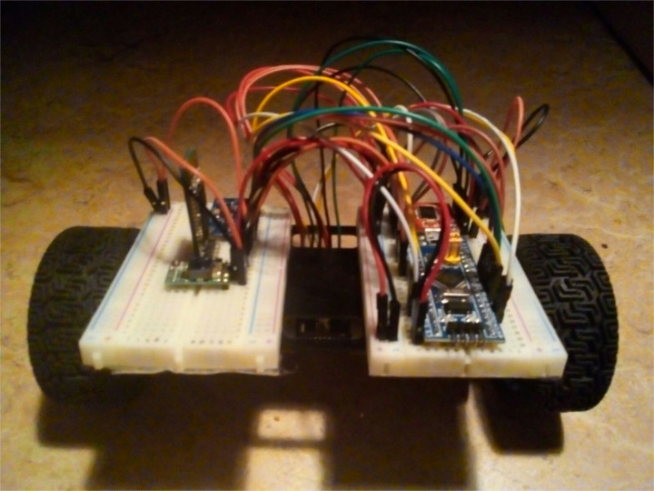
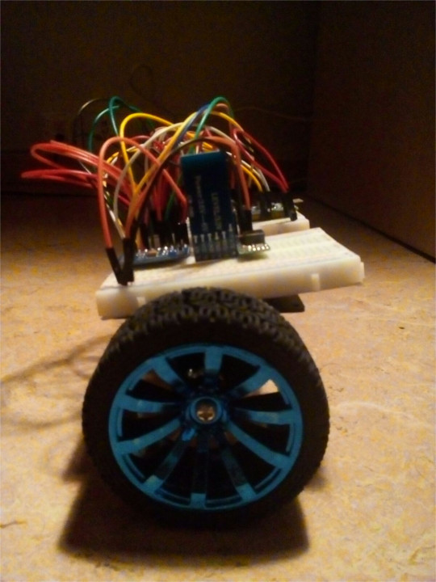
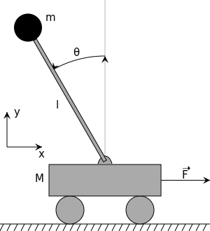
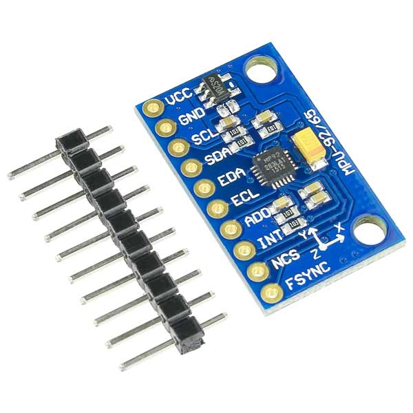
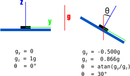
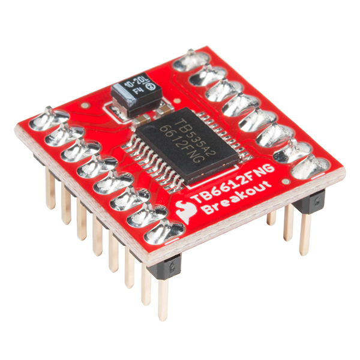
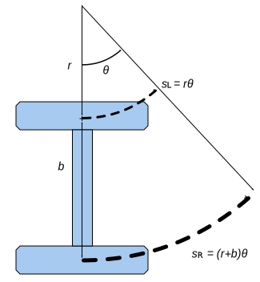
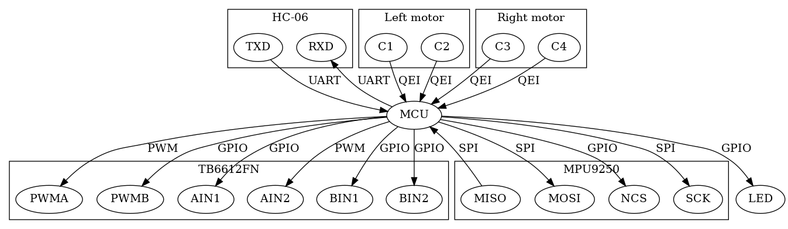
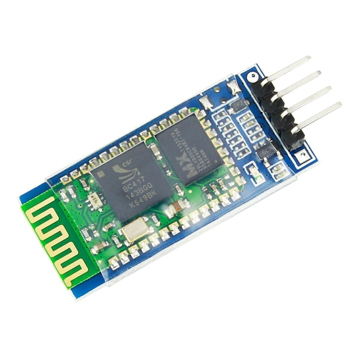
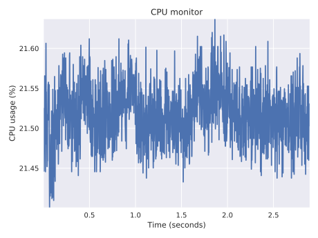

Rusty Robots
Programming a self-balancing robot in Rust
Jorge Aparicio (@japaric)
https://japaric.github.io/fosdem-2018-02-04The robot: front view
The robot: side view
Clearly unstable ...
The system model
Inverted pendulum
{kind=link}
Accelerometer
Measures proper acceleration
MPU9250
Tilt from gravity
gyroscope
Measures angular rate (degrees per second)
MPU9250
Sensor fusion
Combine data from independent sensors to reduce uncertainty.
Motors: H bridge
TB6612FNG
H bridge: direction

16 possible states but only 4 are used: open, brake and the two above
H bridge: speed
Pulse Width Modulation (PWM)

PID control

- y(t) = measured tilt angle
- u(t) = PWM duty cycle & direction
- r(t) = desired tilt angle (set point)
- e(t) = error
Stable
Unstable
Motion
Differential steering
Spin the wheels at different speeds
Wait ...
Wasn't this talk about Rust?
Configuration
Board connections
embedded-hal traits
Code reuse: Write once, use everywhere
- Implementers (platforms)
- stm32f103xx-hal : STM32F103xx microcontrollers
- linux-embedded-hal : Raspberry Pi and other SBC
- Drivers
- mpu9250 : Acceloremeter + gyroscope + compass
- mfrc522 : RFID tag reader / writter
- And many more to come!
Communication
HC-06: UART <-> Bluetooth
Concurrency
Real Time For the Masses (RTFM) framework for multitasking
- Periodic task (512 Hz)
- Read sensors
- Update Kalman filter
- Update PID controller
- Log data
- Rx task
- Parse received frame
- Update PID gains
Miscellany
CPU usage
21% CPU @ 64 MHz, no FPU, control loop @ 512 Hz
In conclusion
Rust ...
- is small
- is fast
- is memory safe
- lets you write more correct code
- lets you easily use third party code
- is good for code reuse
Thank you!
Questions?